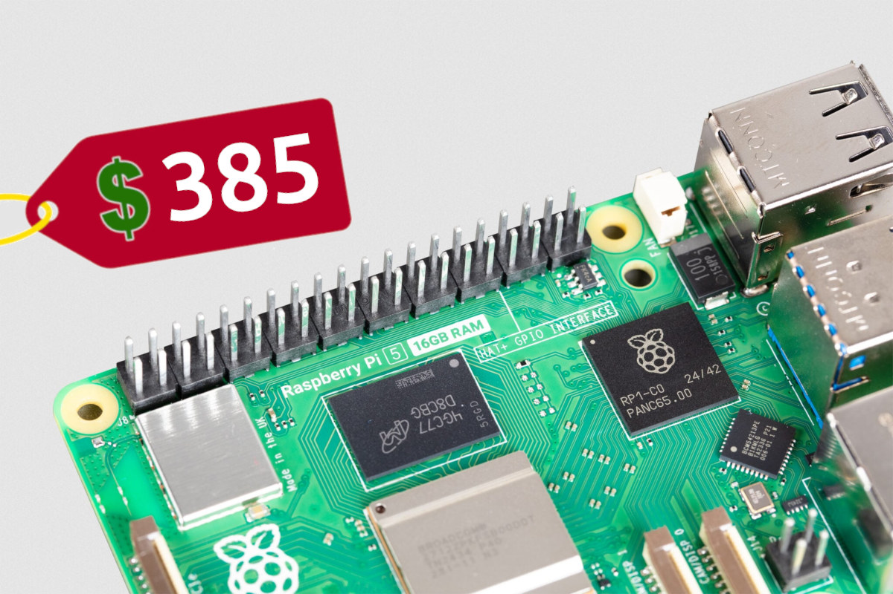
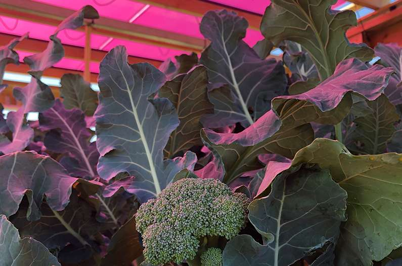

Follow-UpOpus 5.5 reasoning-change claims rise by 345 points.
FieldCanada launches Real-Time Rail with eight initial participants.
AI Desk
Anthropic releases Claude Fable 5.2 and Mythos 5.2[1]
The models share underlying technology but have different access and safeguards.
AI Desk★ 751 pts · 421 cmts
SAN FRANCISCO — Anthropic released Claude Fable 5.2 and Mythos 5.2, charging $8 per million input tokens and $40 per million output tokens. The company says the models generate output up to 30% faster than their predecessors and share the same underlying model; Mythos access is restricted to verified cybersecurity and biomedical organizations.[1]
Anthropic reports a 49.1% FrontierCode 2.0 result at Fable’s Xhigh effort, and says an earlier version helped migrate a production service from Python to Rust. These are company-reported results, not independent guarantees. In the HN discussion, readers questioned the pricing and the comparison with Opus 5.5.[11]
Illustration accompanying Anthropic’s model announcement. www.anthropic.com
Foldable Flight rates models by difficulty and flight characteristics.
Culture Desk★ 742 pts · 128 cmts
Foldable Flight lists 109 paper-airplane designs, with difficulty and speed, glide and accuracy ratings. Its Unite design holds a 31.2-second time-aloft record, according to the site; it describes Firefly 5 as a record prototype that can fly over 300 feet.[2]
Designs range from very easy to expert. One HN reader noted that some folding instructions are long videos; another pointed out a duplicated intermediate filter.[12]
Image from Foldable Flight’s paper-airplane catalogue. www.foldableflight.com
Follow-Up
Opus 5.5 reasoning-change claim gains 345 points[3]
The original analysis is not a controlled benchmark.
AI Desk★ 655 pts · 429 cmts · ▲ +345 since the last edition
Shane Melaugh says a Gemini 4 Argon analysis of 1,400 Claude Code sessions found a sharp change in Opus 5.5 reasoning patterns on November 3, despite an unchanged model name. He reported that a high-effort run failed to fix a bug in three hours while an Xhigh run found a fix in minutes.[3]
Melaugh later cautioned that his analysis was not a scientifically bulletproof benchmark. HN readers reported mixed experiences, and one suggested a changed summarizer as an alternative explanation; that claim is not independently established. The thread rose from 310 points in the morning edition to 655 at this snapshot.[13]
Field Desk
Canada launches its Real-Time Rail payment system[4]
The first cohort is limited; major banks are expected to join later.
Field Desk★ 415 pts · 226 cmts
Payments Canada launched the Real-Time Rail on November 9, enabling participating providers to clear and settle payments around the clock using ISO 20022 messaging. The initial eight participants include Wealthsimple, Questbank and Bank of America.[4]
The operator says confirmation of payee for consumer accounts, transaction risk scoring and centralized fraud services are part of the launch. It expects coverage of more than nine in 10 Canadians within the first year, not on day one. HN readers asked how the infrastructure differs from existing Interac transfers.[14]
CNX Software reports that the Raspberry Pi 5 with 16GB of RAM now costs $385, an $80 increase from the previous April price. The 16GB Compute Module 5 Lite starts at $375, while the Raspberry Pi 500+ remains at $410.[5]
The report notes that the 16GB Pi 5 launched at $120 less than two years earlier and attributes the wider pressure to high memory prices. HN readers debated the duration of the shortage and whether high prices would change software memory use.[15]

Raspberry Pi 5 16GB pictured with its reported price. www.cnx-software.com
Field Desk
USPS offers ZIP Code boundary data with quarterly updates[6]
Postal delivery groupings are not the same thing as guaranteed address boundaries.
Field Desk★ 231 pts · 111 cmts
The U.S. Postal Service offers national ZIP Code boundary polygons derived from delivery address and location information. Its product page lists internal, enterprise and publication versions, each with four quarterly updates; enterprise and publication licenses limit distribution or publication.[6]
In the HN discussion, one geospatial practitioner cautioned that being inside a polygon does not guarantee an address has that ZIP Code. Another reader pointed to free Census ZCTA files as an approximate alternative.[16]
Science Desk
Magenta solar panels preserve broccoli yield in preliminary trial[7]
The shaded crop took 25 additional days to reach harvest.
Science Desk★ 223 pts · 127 cmts
A preliminary study reported by Anthropocene found that broccoli under semi-transparent magenta solar panels produced roughly the same yield as unshaded plants, but needed 25 extra days before harvest. The panels transmit most red and some blue wavelengths while converting much of the rest into electricity.[7]
The article reports a 2.8- to 4.5-fold increase in efficiency converting light into plant biomass, and says larger plots across seasons and climates are needed. One HN reader questioned whether conventional panels plus LED lighting might be cheaper; that is a hypothesis, not a result of the trial.[17]

Broccoli growing beneath colored solar panels in Sweden. www.anthropocenemagazine.org
Culture Desk
Former Ethereum Foundation employee alleges retaliation[10]
The lawsuit concerns a mandate and a suicide-pledge illustration.
Culture Desk★ 170 pts · 160 cmts
A Colorado lawsuit by former Ethereum Foundation employee Kayleen Fulton alleges she was fired after organizing resistance to an employee mandate containing an illustrated suicide pledge, The Denver Post reports. Fulton alleges disability discrimination and retaliation among other claims.[10]
The report says a foundation leader told staff the pledge was not meant literally and that the commitment form was later clarified. The foundation had not immediately responded to the newspaper’s request for comment. An HN reader linked to the foundation’s mandate; the allegations remain claims in a lawsuit.[20]
Tools Desk
A malloc walkthrough shows how allocators reuse memory[8]
A glibc example serves 1,000 small allocations with two brk system calls.
Tools Desk★ 192 pts · 50 cmts
Ben Mandrew demonstrates that 1,000 calls to malloc(16) in his glibc example trigger just two brk system calls: one queries the program break and another grows the heap by 132 KiB. The remaining allocations draw on that space rather than each making a system call.[8]
The walkthrough builds a toy allocator with free lists, splitting and coalescing, and explains why fragmentation can retain resident memory. It contrasts heap trimming with separate mmap allocations that can be unmapped independently. A reader noted that the article’s code fragments are not presented as complete compilable programs.[18]
AI Desk
Meta introduces Muse Ember for lower-cost agent tasks[9]
The model is available through the Meta Model API.
AI Desk★ 185 pts · 76 cmts
Meta introduced Muse Ember at $0.10 per million input tokens and $0.50 per million output tokens, positioning it for tool calls, coding subtasks and document parsing. It lists a 1-million-token context window and up to 512,000 output tokens.[9]
Meta says Ember matches Claude Haiku 5.5’s best Artificial Analysis score at roughly a third of the cost; the comparison uses proposed pricing and the cited evaluation settings. One HN reader tested its six reasoning levels and found that a higher setting did not consistently improve a drawing task.[19]
Quote of the Day
“this isn't a scientifically bulletproof benchmark”Shane Melaugh, on his Opus 5.5 analysis [3]
His clarification qualifies a claim drawn from analysis of 1,400 sessions; it does not establish why the patterns changed.
Box Score
Points and comments are the front-page snapshot, not a later live count.
Front Page Ledger
Anthropic’s model launch led by points; the Opus reasoning debate drew the most comments.
Front Page Ledger
Fresh stories
9
Follow-ups
1
Carried in digest
0
Wire stories
0
Combined points
3,802
Combined comments
1,927
Corrections & Clarifications
Model change. Melaugh reports a change in reasoning patterns, not proof of a model downgrade; he says the analysis is not a rigorous benchmark. [3]
Canadian payments. The rail has launched, but the operator expects more than 90% reach within a year, not immediately. [4]
Broccoli yield. Roughly equal harvests under magenta panels required 25 more days; this was a preliminary study. [7]
ZIP boundaries. USPS polygons represent delivery groupings; a reader notes that a position inside the shape does not guarantee the address’s ZIP. [6][16]
Publisher’s Note
Anthropic’s release leads this edition; the Opus 5.5 reasoning debate returns as a follow-up after gaining 345 points. The USPS source offered no image. The Ethereum report describes allegations, not findings of liability.
Hacker News front-page candidate snapshot: November 9, 2026, 22:00 UTC. Scores and comment counts are from the fetched Algolia front-page response. Selection compares the previous four archived editions; the follow-up rose from 310 to 655 points. Article pages and discussion threads were retrieved for this edition. Anthropic lists a San Francisco office on its news page.